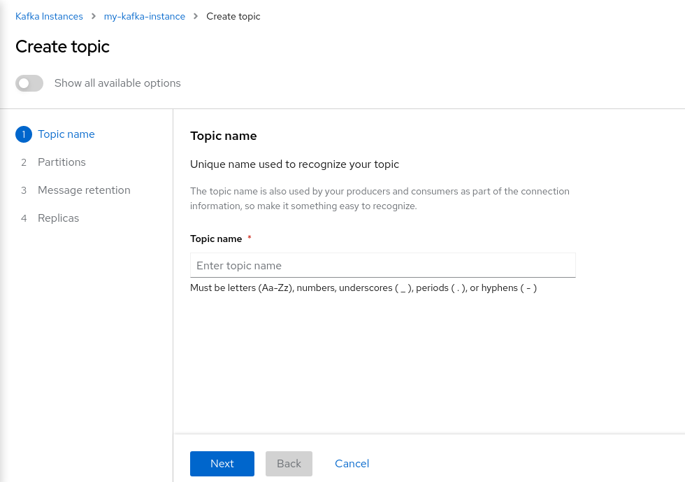

Create Kafka Topics in OpenShift Streams for Apache Kafka
After you create a Kafka instance, you can create Kafka topics to start producing and consuming messages in your services.
-
In the Kafka Instances page of the web console, click the name of the Kafka instance that you want to add a topic to.

-
Select the Topics tab, click Create topic, and follow the guided steps to define the topic details. Click Next to complete each step and click Finish to complete the setup.

-
Topic name: Enter
usd-prices. This is the name of the topic that the Quarkus applications later in this workshop use. -
Partitions: Set the number of partitions for this topic. This example sets the partition to 1 for a single partition. Partitions are distinct lists of messages within a topic and enable parts of a topic to be distributed over multiple brokers in the cluster. A topic can contain one or more partitions, enabling producer and consumer loads to be scaled.
You can increase the number of partitions later, but you cannot decrease them. -
Message retention: Set the message retention time and size to the relevant value and increment. The default retention time is set to
A weekand the retention size toUnlimited. Message retention time is the amount of time that messages are retained in a topic before they are deleted or compacted, depending on the cleanup policy. Retention size is the maximum total size of all log segments in a partition before they are deleted or compacted. -
Replicas: For this release of Streams for Apache Kafka, the replicas are preconfigured. The number of partition replicas for the topic is set to
3and the minimum number of follower replicas that must be in sync with a partition leader is set to2. Replicas are copies of partitions in a topic. Partition replicas are distributed over multiple brokers in the cluster to ensure topic availability if a broker fails. When a follower replica is in sync with a partition leader, the follower replica can become the new partition leader if needed.
-
Once the topic named usd-prices is created, create a second topic named eur-prices.
After you complete the topic setup, the new Kafka topics are listed in the topics table. You can now start producing and consuming messages to and from topics using services that you connect to this Kafka instance.